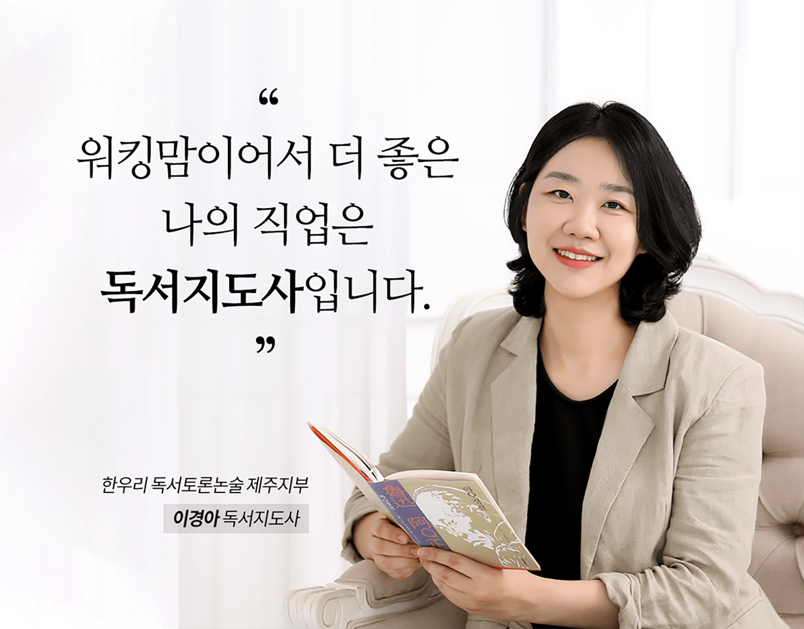

바쁜 워킹맘에게 힘이 되는 이름, 독서지도사
제주지부 이경아 독서지도사

불과 3년 전만 해도 나는 ‘한우리 교사’가 될 거라는 상상조차 하지 못하던 평범한 주부였다. 6살, 3살 두 아이들을 키우며 출구가 없어 보이는 육아 지옥에 허덕였다. 어느 날 친구와의 대화 끝에 우연히 <한우리 독서지도사 양성반 모집> 소식을 들었다. 순간 내 마음의 종이 울리면서 깊은 곳에서 느껴지는 한마디!